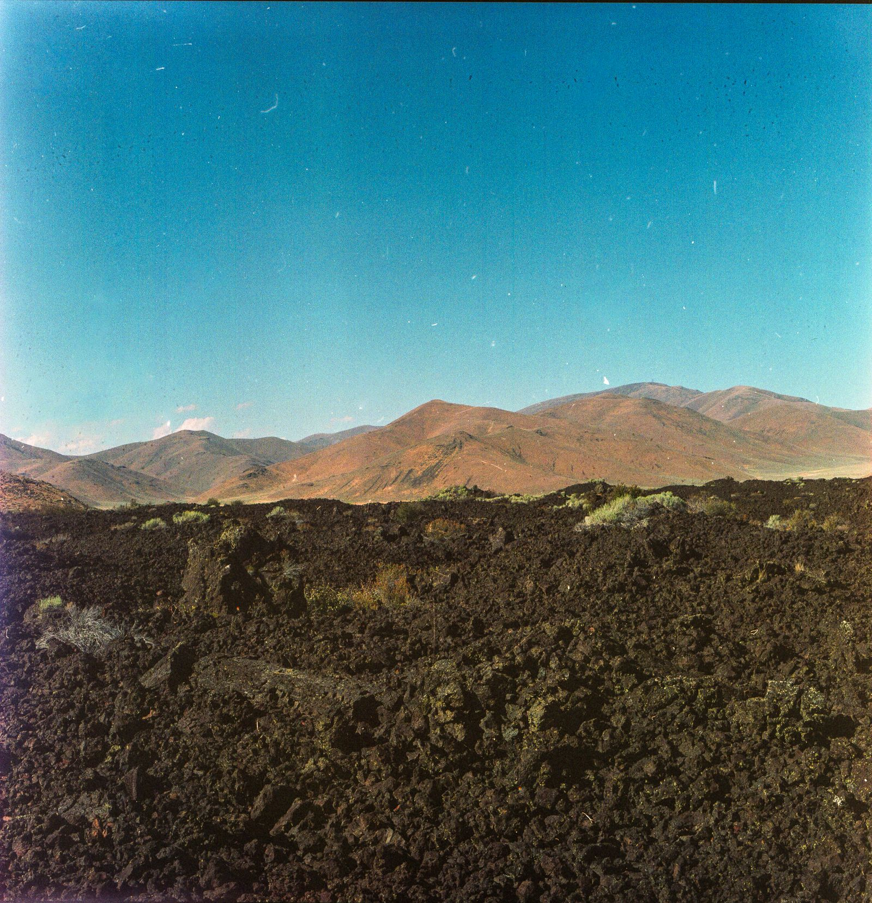

FIG. 03 — Volcanic rock country of the kind the network crosses. Reference photograph by Caleb Minear (Pexels) — not the study area, which is not named here.
Field Note 01 · Network Densification
The fault that was drawn in the wrong place
- Client type
- Regional observatory
- Programme
- 9-station densification
- Span
- 2023 – 2024 · 14 months
- Status
- Complete · stations adopted
The brief
A regional observatory's hazard inputs rested on a fault segment mapped from surface geology in the 1970s. Their catalogue located the segment's small earthquakes with errors larger than the segment's width — the map said where the fault was, but the earthquakes, such as they could be located, were under no obligation to agree. The ask: densify the network around the segment and locate its microseismicity properly for the first time.
Decisions
Nine broadband stations were sited by noise survey before a single hole was dug — two first-choice sites were rejected because a station beside a farm track records the farm track. Geometry was designed around the segment, not around road access, which cost two difficult installations and bought location errors under a kilometre horizontally. Magnitudes were computed as Mw throughout, with the local scale kept in the log for comparison and never mixed into the results.
Outcome
Fourteen months of microseismicity drew a line — and the line sat roughly two kilometres from the mapped trace, on a parallel strand the surface mapping had missed. The observatory revised its hazard inputs, adopted all nine stations into the permanent network, and the mapped fault was redrawn with the seismic strand marked as the active one. The old map was not wrong about everything; it was wrong about the one thing it was for.
Our mapped fault was in the wrong place, and Ruth's stations were the reason we found out from data instead of from an earthquake. The densification paid for itself the day the locations came in.”
Network Manager · Regional seismic observatory — the client for this engagement.